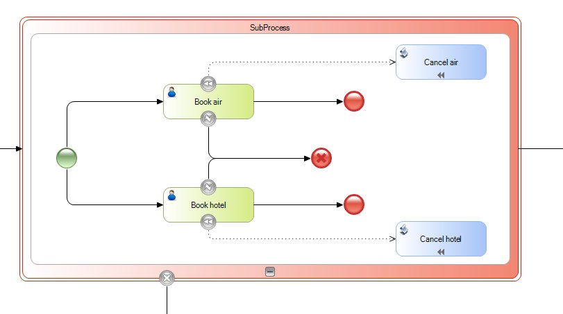

It indicates that an embedded Transaction subprocess needs to be rolled back.
When this event is reached, it causes the current thread and all other active threads to end immediately, regardless of their respective states.
It is possible to attach a Cancel Intermediate Event to the embedded subprocess, so once the subprocess is undone, this enables the flow to continue down the path indicated by this event.
To do a rollback you need to associate each activity with a Compensate Intermediate Event.
The following example shows how the Cancel End Event is usually used with Error and Compensate events. If an error occurs due to a lack of availability for any reservation, the flow moves down to a Cancel End Event. This will activate the rollback process and any reservation activity that has been completed will be undone. Note that tasks are undone in the reverse order in which they were completed.

Objects: Business Process Diagram
Compensate Intermediate Event
Cancel Intermediate Event
Error Intermediate Event in BPD
Error Handling in BPD
| Backlinks | ||
| BPD End Events | Cancel Intermediate Event in BPD | Compensate End Event in BPD |
| Compensate Intermediate Event in BPD | Toc:GeneXus BPM Suite |